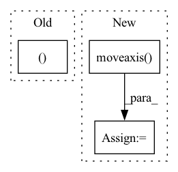

Pattern ID :4577
Before Change
imgs = np.stack(imgs, axis=-1)
print("Loaded camera poses, scene bounds, and image data.")
return imgs, poses, z_bounds
def imread(img_file: str) -> np.ndarray:
After Change
// swap the ordering of axes - (*, N) -> (N, *)
imgs = np.moveaxis(imgs, source=-1, destination=0).astype(np.float32)
extrinsics = np.moveaxis(extrinsics, source=-1, destination=0).astype(np.float32)
intrinsics = np.moveaxis( intrinsics, source=-1, destination=0) .astype(np.float32)
z_bounds = np.moveaxis(z_bounds, source=-1, destination=0).astype(np.float32)
return imgs, extrinsics, intrinsics, z_boundsIn pattern: SUPERPATTERN
Frequency: 3
Non-data size: 3
Instances Fragment ID: 16537070
Project Name: dvelopery0115/torch-nerf
Commit Name: 7880d3f3120e36d298df8cde8c346a8cf69a974b
Time: 2022-06-30
Author: dreamy1534@kaist.ac.kr
File Name: torch_nerf/src/utils/data/load_llff.py
M Class Name: AnonimousClass
N Class Name: AnonimousClass
M Method Name: _load_data(4)
N Method Name: _load_data(4)
M Parent Class:
N Parent Class:
M File Name: torch_nerf/src/utils/data/load_llff.py
N File Name: torch_nerf/src/utils/data/load_llff.py
M Start Line: 69
M End Line: 140
N Start Line: 69
N End Line: 170
Before Change
def grab_data_and_img(self):
img = np.asarray(self.sct.grab(self.monitor))[:, :, :3]
data = self.client.retrieve_data()
img = cv2.resize(img, (191, 98 ))
self.img = img // for render()
return data, img
After Change
def grab_data_and_img(self):
img = np.asarray(self.sct.grab(self.monitor))[:, :, :3]
img = np.moveaxis( img, -1, 0)
data = self.client.retrieve_data()
self.img = img // for render()
return data, img
Fragment ID: 16537081
Project Name: trackmania-rl/tmrl
Commit Name: 3fe2bd123cb75121b0b51d87daf9876bbb7cb854
Time: 2020-11-01
Author: edouard.geze@hotmail.fr
File Name: agents-rt/agents/custom/custom_gym_interfaces.py
M Class Name: TM2020Interface
N Class Name: TM2020Interface
M Method Name: grab_data_and_img(1)
N Method Name: grab_data_and_img(1)
M Parent Class: RealTimeGymInterface
N Parent Class: RealTimeGymInterface
M File Name: agents-rt/agents/custom/custom_gym_interfaces.py
N File Name: agents-rt/agents/custom/custom_gym_interfaces.py
M Start Line: 161
M End Line: 163
N Start Line: 108
N End Line: 109
Before Change
// needed in torch_em.loss.dice.flatten_samples
pred = torch.stack(pred).transpose(0, 1)
trgt = torch.stack(trgt).transpose(0, 1)
return pred, trgt
def _multiply(prediction, target, mask, channel_dim):
prediction = prediction * mask
target = target * maskAfter Change
mask = mask.squeeze()
// move channel axis to end
prediction = prediction.moveaxis(channel_dim, -1)
target = target.moveaxis( channel_dim, -1)
// output has shape N x C
// correct for torch_em.loss.dice.flatten_samples
return prediction[mask], target[mask]
Fragment ID: 16537063
Project Name: constantinpape/torch-em
Commit Name: 6a9fecb01af03bfbe5971bc1fd29c1bc06e9c455
Time: 2022-12-09
Author: jonas.hellgoth@gmx.de
File Name: torch_em/loss/wrapper.py
M Class Name: ApplyMask
N Class Name: ApplyMask
M Method Name: _crop(4)
N Method Name: _crop(4)
M Parent Class:
N Parent Class:
M File Name: torch_em/loss/wrapper.py
N File Name: torch_em/loss/wrapper.py
M Start Line: 49
M End Line: 66
N Start Line: 48
N End Line: 59